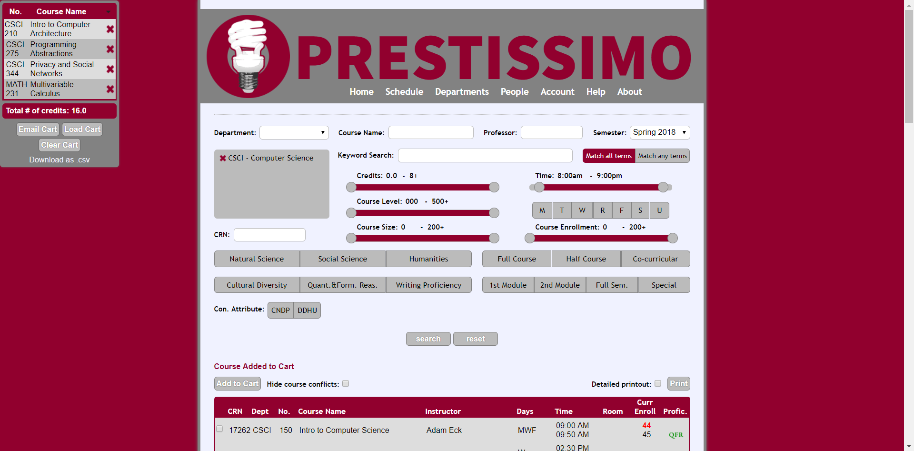
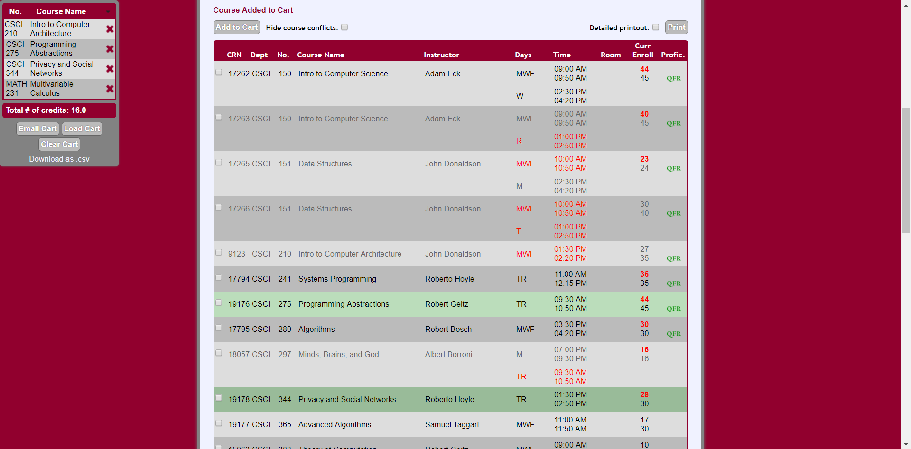
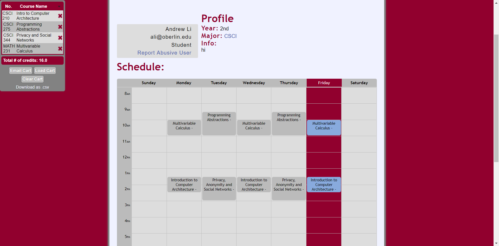
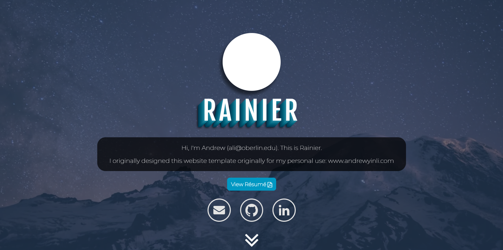
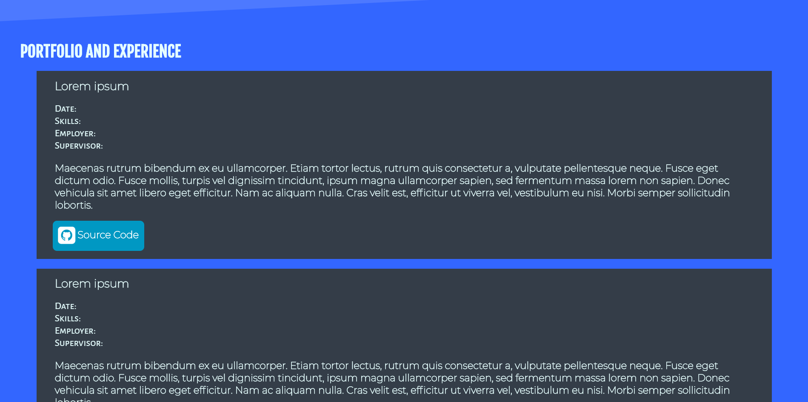
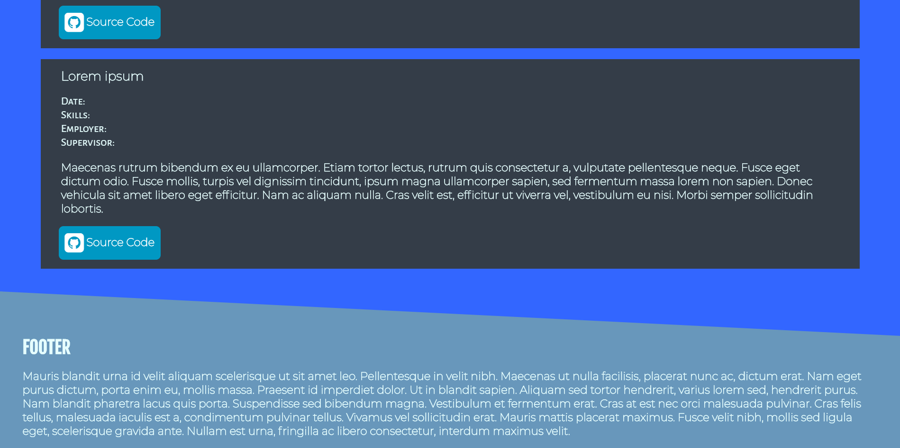
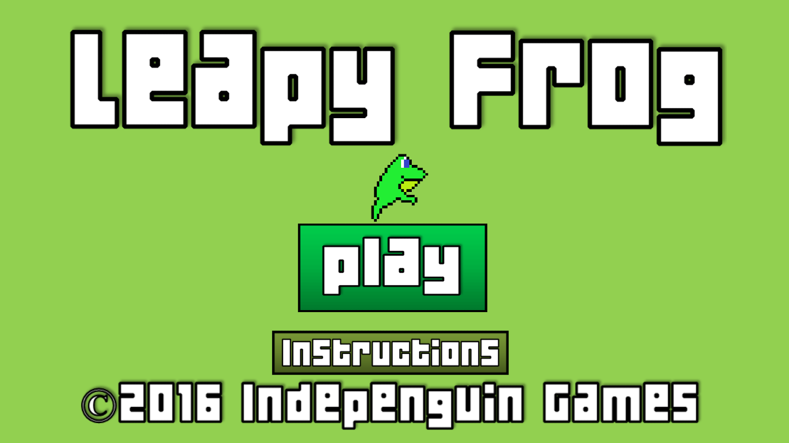
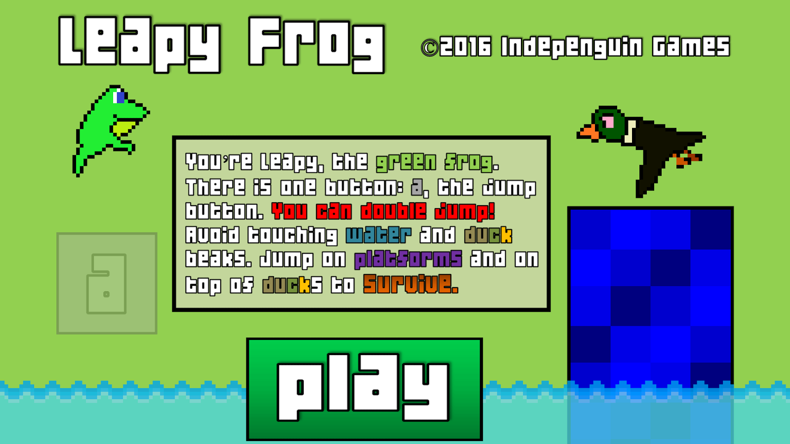
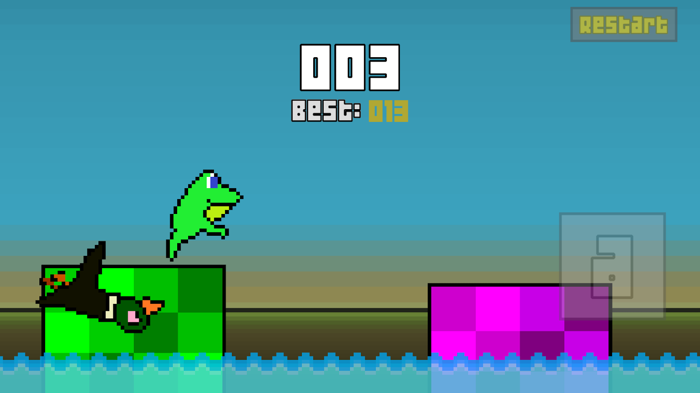

Agile and communicative individual who welcomes challenges with enthusiasm and passion!
Currently seeking a software engineer or related intern position for Summer 2018. Let's connect!
About Me
Hi, I'm Andrew! Hailing from Seattle, WA, I am currently a sophomore at Oberlin College pursuing a Bachelor's degree in Computer Science with a minor in Mathematics, on track to graduate in May 2020. As I gear up for a career as a software engineer, I seek to equip myself with practical and stimulating experience to complement my coursework, hence my desire to intern as a software engineer or related position over this coming summer to further hone my skills in computer science and cultivate my passion for computer science. Software engineering, machine learning/artificial intelligence, and game development are the fields that I am most interested in. In my free time, I love to run and pet other peoples' dogs.
I designed this website from scratch with HTML5, CSS3, and Javascript to visually accentuate my work and experience involving computer science. My résumé further expands upon my skills, education, and experience. I look forward to connecting with you!
Portfolio and Experience
Backend Web Developer - Oprestissimo
Date: December 17th, 2017 to February 2nd, 2018 (In-Progress) Skills: Ruby on Rails, Javascript, HTML5, CSS3 Employer: Oberlin College Computer Science Department Supervisor: Professor Roberto Hoyle (rhoyle@oberlin.edu, 440-775-8424)
Currently partaking in Oberlin College's interdisciplinary Winter Term (also known as January Term) program in which 6 weeks are dedicated exclusively to a project. Currently a backend web developer for Oberlin College's third party course scheduling website. Utilizing machine learning to implement a recommender system in Ruby on Rails through a similarity learning algorithm to suggest courses to students during course registration based on their past courses. This new system will expedite the course registration process for students during course registration period.

Homepage for Oprestissimo.

Example of course list.

Example of a schedule for Spring 2017.
Rainier Website template
Date: December 2017 to January 2018 Skills: HTML5, CSS3, and JavaScript Employer: Independent Project
I coded this website from scratch with HTML5, CSS3, and JavaScript as I intended for it to be my portfolio website showcasing my work in computer science. After nearing completion, I realized that I was really proud of my work and wanted to share it other people! Hence, I cleaned up my code and have released it as a portfolio website template that I have dubbed "Rainier", after Mt. Rainier in my native Washington. The video background for this website is actually a timelapse of Mt. Rainier!

Initial load of the website template.

The portfolio section.

Part of the portfolio section and footer.
Mobile Game Developer - Leapy Frog
Date: May 2015 to November 2015 Skills: C# and Unity3D Game Engine Employer: Independent Project
Self-learned C# and the Unity3D Game Engine through textbooks and YouTube videos. Independently developed and published a 2D Android game to the Google Play Store using my newfound knowledge on C# and Unity3D. As of 2018, the app has 200+ downloads on Google Play. The game is an infinite runner/platformer in which you play as a frog and dodge ducks while leaping to the next platform, attempting to land on as many succeeding platforms as possible.

Game menu for Leapy Frog.

Instructions on how to play.

Example of gameplay. The player (frog), who is mid-air, jumped on a bird which killed it and thus avoiding a collision.